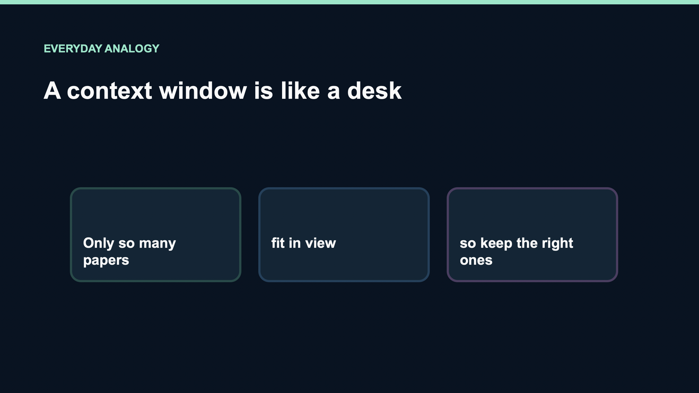

What is a Context Window?
A context window is the amount of tokenized information a model can consider in one request.
Topic detail
The working context can include system instructions, conversation history, tool definitions, retrieved passages, the current task, and the output the model is allowed to generate. The exact accounting depends on the model and API.
A context window is a per-request working set, not a permanent memory store.
Why it matters
Every extra transcript, tool result, or retrieved passage uses tokens. Long context can increase processing work and can make relevant instructions harder to notice, even when the hard limit is not reached.
Sample
A coding agent starts with a clear bug report. After many tool calls, verbose logs and file dumps consume the working set, leaving less room for the original goal and the final answer.
Easy analogy

Like a desk, a context window can show only so many papers at once. Putting the relevant pages within reach is more useful than covering the desk with every document you own.
Watch the explainer
{kind=link}
Key takeaway
A context window is a bounded token budget. Curate for relevance instead of treating capacity as memory.